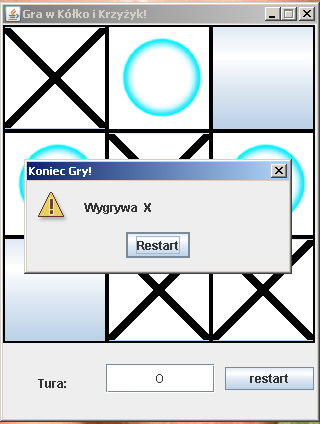
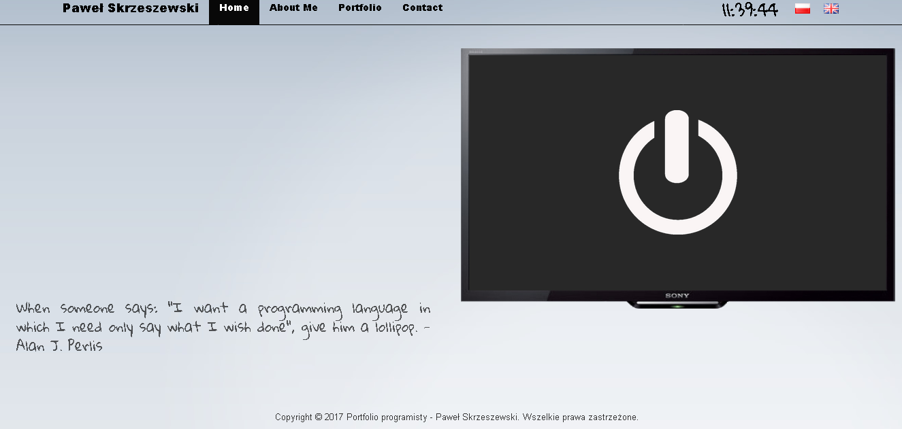

Obecna strona jest moim najnowszym projektem. Poniżej znajdziecie moje wszystkie dotychczas wykonane projekty wraz z opisem narzędzi i technologii potrzebnych do ich wykonania. Projekty 2017:
 "Biorąc pod uwagę aktualny, smutny stan naszych programów komputerowych, rozwijanie oprogramowania jest cały czas jeszcze czarną magią i nie może być jeszcze nazwane dziedziną inżynierii." - Bill Clinton